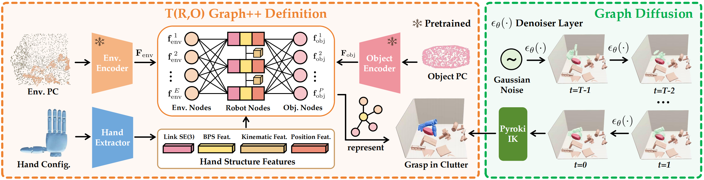

Dexterous grasping in cluttered scenes remains a central challenge in robotic manipulation, as it requires high-dimensional hand coordination under complex object-environment constraints. To address this problem, we introduce one of the largest simulation benchmarks to date, comprising around 0.5B grasp annotations across eight dexterous hands and approximately 50K objects. Further, we propose \(\small \mathcal{T}(R,O)\) Grasp++, a scalable diffusion-based framework for cross-embodiment dexterous grasp synthesis in cluttered environments. Extensive experiments demonstrate that our model significantly outperforms existing baselines, achieving an average success rate of 88% across eight dexterous hands. Meanwhile, our pipeline achieves only 0.3s inference latency while improving inference sample efficiency by over 10 times.

Overview of \(\small \mathcal{T(R,O)}\) Grasp++: We define \(\small \mathcal{T(R,O)}\) Graph++ to capture spatial relations among target object, surrounding environment, and arbitrary dexterous hand. We then apply a graph diffusion model to generate link-wise \(\small SE(3)\) poses.